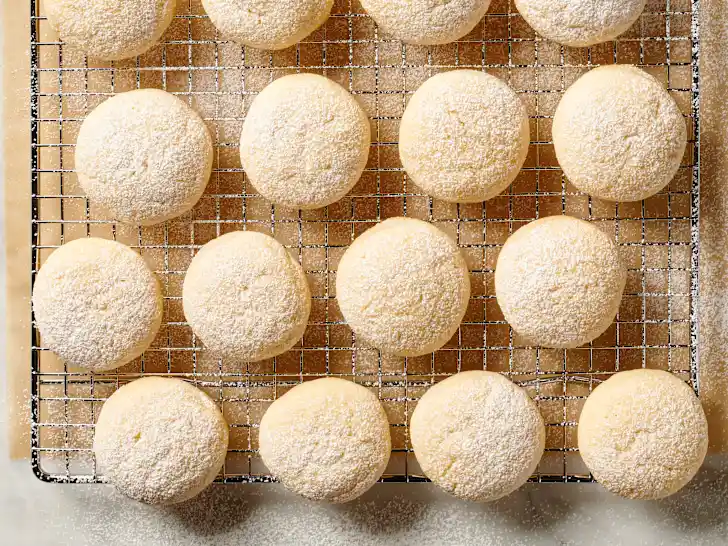

cream cheese cookie

These cream cheese cookies are delicate when made with a flower cookie press, and a little sturdier if you make them as drop cookies. I like to fill the center with preserves or a chocolate chip when I make them for Christmas cookie trays.
Ingrediens:
- 1 cup butter, softened.
- 1 (8 ounce) package cream cheese, softened
- 1 cup white sugar
- 1 egg yolk
- ½ teaspoon vanilla extract
- 2 ½ cups all-purpose flour
Steps:
- Preheat the oven to 325 degrees F (165 degrees C). Lightly grease cookie sheets
- Beat butter, cream cheese, and sugar together in a large bowl with an electric mixer until light and fluffy. Beat in egg yolk and vanilla. Stir in flour until well blended. Drop dough by spoonfuls or use a cookie press to place onto prepared cookie sheets. If using floral cookie press design, make an indentation in the center with a thimble, fill with preserves, or press candy into center.
- Bake in the preheated oven for 15 minutes. Cookies will still be pale. Cool cookies on baking sheets. They will harden slightly as they cool